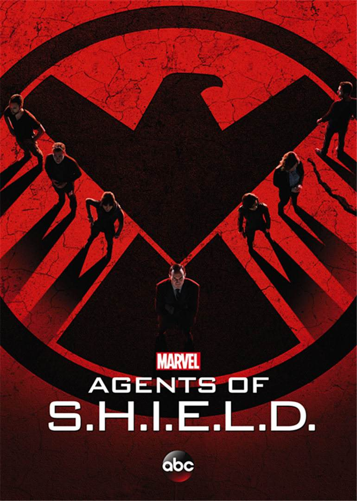
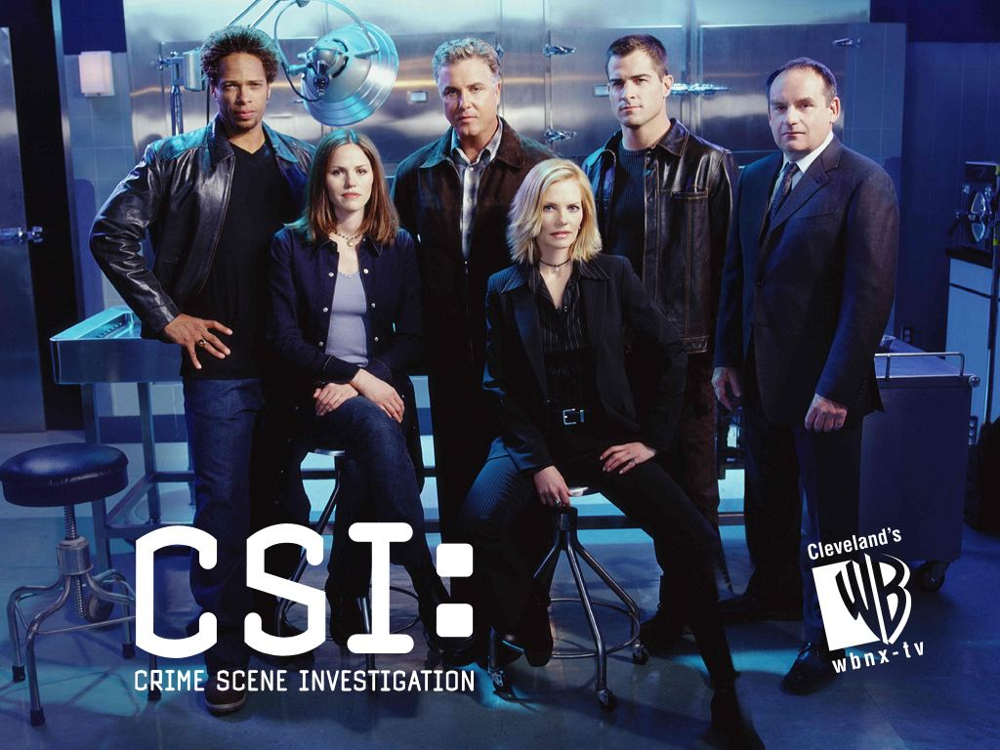

A grade 12 high school student in Chengdu Foreign Languages School currently. Planning major in Game Development:)
|  |
Agents of S.H.I.E.L.D.S.H.I.E.L.D. senior agent phil colson returned from the war in New York to the law enforcement agency SHIELD. He organized an elite, well-trained team of agents to deal with cases that had not yet been designated classified: new, unfamiliar, unknown. The group includes an honest and frank agent ward, an expert on warfare and espionage; agent may is a pilot and martial arts expert; agent fitz is a gifted scientist, but his interpersonal skills are somewhat awkward; agent simmons has a great deal of knowledge of biology and chemistry; and civilian hacker Skye |
ScorpianFederal agent Kevin cabe, who had dealt with walter, approached him, called the Scorpio team and used their extensive knowledge of technology to solve severe crises. Because of the lack of social experiences, even team members can find comfort in each other, once they go out of this circle, their eccentric personality will bring them endless troubles. They rely on Peggy who worked at a restaurant to communicate with the outside world. Peggy has an intelligent son, Ralph, so she actually understands the inner world of geniuses. Without Peggy, these highly intelligent people can not be able to take care of themselves, and will be easily misunderstood. These clever nerds finally accepted the job opportunities provided by Cabe. It is a perfect job for them: they can be their own extraordinary wisdom to solve the national crisis. At the same time, they can help each other better integrate into modern society through this job. The problems they face range from minor problems with casino security to big problems with state-to-state relations, such as drone attacks. |
|
|  |
CSI(Crime Scene Investigation)A group of forensic professionals, through the scene of the crime of print, shells, fingerprints, hairs, blood, fibers, particles, objective physical body characteristics, using the most advanced, high-tech means of material analysis, on the basis of "all speak in evidence" reasonable inference, finally lock the murderer. The crimes all happen in Las Vegas, a city of gold, so it touches on many casino developments and the vast desert of Nevada. CSI team members include: casino boss's daughter, Katherine wei Ross; previous gambling addiction man huarui.brown; simple and honest agent Nick stokes, rocker style forensic DNA researchers Greg sanders. Gil grissom, a skilled CSI agent, lead the team fight against all the darkness in Las Vegas . |